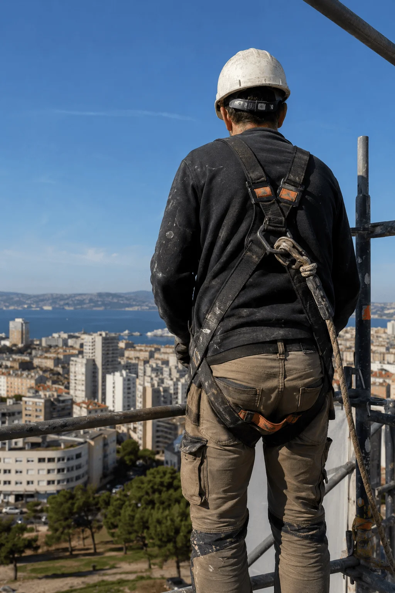

Formateur sécurité travail en hauteur — Marseille
| Formation initiale | BTS bâtiment, CQP1 cordiste passé à Millau à 22 ans |
| Terrain | 12 ans cordiste — ravalement, désamiantage, inspection d'ouvrages, soudure en hauteur sur pylônes (Marseille, Lyon, chantiers industriels) |
| Certifications | CQP2, IRATA niveau 3 |
| Aujourd'hui | Formateur — cordistes, nacellistes, couvreurs, élagueurs grimpeurs ; fait passer les CACES nacelle R486 et les habilitations travail en hauteur |
À 34 ans, une chute sans gravité sur un chantier de désamiantage m'a fait réfléchir. J'ai passé mon CQP2, ma certification IRATA niveau 3, puis je me suis orienté vers la formation. Depuis 8 ans, je forme sur le terrain plutôt que sur des chantiers — mais je n'ai jamais arrêté d'y penser en ces termes : ce qu'on n'apprend pas en salle, ce sont les réalités qui coûtent cher quand on les découvre trop tard.
« Sur un chantier de désamiantage à La Joliette, j'ai vu un gars porter son harnais à l'envers pendant deux heures. Personne ne lui avait montré. C'est exactement pour ça que j'ai lancé SOS Voltige. »
Le site rassemble ce que je transmets en formation : fiches métier honnêtes (salaire réel, pas les chiffres marketing), guides CQP/CACES/IRATA, comparatifs entre métiers du travail en hauteur, réglementation traduite du juridique en langage de chantier, et le matériel que j'utilise et recommande — harnais, longes, descendeurs.
© Rémi Darnal